OK, all you vegetarians. In the past we've run a number of articles for you, including the massive 15-page FOOD THING back in NO. 4. We certainly respect your viewpoint . . . but now it's time to give equal play to all the folks who've been raising homestead animals for food. It's time, in short, to lay down a concise set of instructions for the home freezing, smoking, canning and preserving of meat. Meat eaters, take note . . . vegetarians, skip the next 10 pages!
Our special thanks to Irma Mills of Watertown, Tennessee, who turned us on to Morton Salt's excellent booklet, A COMPLETE GUIDE TO HOME MEAT CURING (available for $1.25 from Morton Salt Company, P.O. Box 355, Argo, Illinois 60501). And Extra Special Thanks to Murray J. Pearthree, Morton Salt Regional Sales Manager, for granting us written permission to reprint from that booklet.
We'll be publishing other sections frorn the Morton Salt handbook in future issues . . . but we'd advise you to zip $1.25 into the mail and add the handy little manual to your farmstead bookshelf right now if you need immediate help cutting up and curing pork, beef, veal, lamb, poultry or wild game.
Beginning with the warm carcass of a freshly butchered hog or other meat animal, up to the time you are ready to cook the meat weeks or months later, you are dealing with a valuable and perishable food product.
Strict attention to correct methods, cleanliness in handling the meat, the proper tools and equipment are all very important. Indifferent methods, or lack of proper attention to important details never helps you to turn out high quality, cured meats that keep well.
A shed or building properly equipped for the job, a small pen along side for penning up hogs before they are butchered, a handy water heating arrangement with scalding vat, a heavy table, a convenient means of swinging the carcass with a block and tackle, heavy single trees and gambrel sticks, and a good set of butchering tools make up the initial equipment that will help you do the job easily, quickly, and efficiently.
A good set of butchering tools should consist of a sticking knife, skinning knife, boning knife, butcher knife, steel, cleaver, bell scrapers, meat saw, and meat hooks. Additional instruments that are very useful are a meat pump, thermometer and meat needle, for sewing rolled cuts.
Pork is our most nutritious
meat and produces a higher
per cent of edible meat
products than any ether
meat animal.
There is no section of the country where hogs cannot be profitably grown for the home meat supply. Hogs reproduce faster and in greater numbers than any other meat animals and most efficiently convert grain and other feeds into edible meat products.
The following table shows the weight of the different cuts from a 225 lb. and 250 lb. hog. It also shows what per cent of the carcass the different cuts represent.
High quality meat with a sweet, rich, full-bodied flavor is always worth a premium, and hogs that produce this kind of meat should be the only ones butchered and cured for home use.
Good meat, of course, depends upon many factors, and one important factor is the kind of hogs butchered. Thrifty, properly fattened hogs, weighing from 180 to 250 lbs. and from eight to ten months old are the best ones for home butchering. Hogs of this size are more easily handled and the meat chills out more quickly. They produce medium weight cuts which are more suitable for the average family, and medium weight cuts will cure quicker and more uniformly than heavier cuts. Medium weight hams, shoulders, and bacon are finer in texture and flavor and are of better quality than those from older, heavier hogs. Non-thrifty shoats, or heavy 400 to 600 lb. hogs do not produce the best type of meat for home curing. Also, it costs more to produce each pound of meat in heavier hogs than in lighter ones.
When does meat curing start-after the meat is cut up and salted down, or before the hogs are killed?
Of course, the actual curing starts when the meat is salted down, but, more broadly speaking, the result of the cure begins with the live hog because the quality of the finished meat depends a lot on how the hogs were handled when butchered, bled, cleaned, and chilled.
Thousands of hams, shoulders, and bacon sides that could just as easily have been high quality meat are often low in quality. Also, actual souring has been brought about through improper butchering. The prevention of meat spoilage and also the foundation of quality meat begins with the handling of the live hog. For this reason the wise thing to do is to practically start curing the meat at the time the hogs are killed-which, of course, means to do every step in the butchering and curing job properly.
Hogs that are to be butchered should be confined in a small pen for two or three days before butchering and for 24 hours prior to killing should be given no food but should have plenty of fresh water. Hogs should never be butchered when they are over-heated, excited, or fatigued, but when they are perfectly quiet and rested. When the body temperature is above normal the meat easily becomes feverish. This is especially true of large or fat hogs or hogs butchered in warmer sections. Proper chilling of meat that was in a feverish condition when butchered is difficult; and meat that is not properly chilled cannot be properly cured. Also, this same feverish condition of the meat can easily be the direct cause of souring or taint. The primary cause of low quality meat and meat spoilage is due to allowing the natural forms of bacteria to develop and multiply.
The different natural bacteria which are present in the blood and tissues of live hogs must be prevented from multiplying and must be held in check until the meat has taken the cure. Meat curing is a race between these different types of bacterial action and the curing action of the salt and other curing ingredients. Also the job of cleaning is made much easier when the stomach contains a minimum amount of food.
The important factors in butchering and curing meat in order to have high quality meat without souring or taint are as follows:
1. Hogs that are quietly handled.
2. A thorough bleed.
3. Quick and efficient chilling.
4. Cleanliness in handling the meat.
5. Proper application of the salt.
6. Overhauling during the cure.
7. Proper washing, drying, and wrapping.
To butcher by sticking only is the most practical, efficient method of killing hogs, and also the most humane. It is best not to stun or shoot a hog before sticking.
With hogs in a small pen and a block and tackle with hoisting arrangement nearby, loop a chain around one hind leg and draw the hog backward through the gate of the pen and up for swinging. The chain should be looped between the hock and the hoof in order not to bruise the ham shank. The most satisfactory bleed can be secured when a hog is swung head downward when stuck.
If an arrangement for swinging the hog is not convenient, then roll the hog on its back and stick on the ground. One man stands straddle of the hog and holds the forefeet while the other holds the chin down and sticks. Whether the hog is stuck from a hanging position or on the ground, the principle and method of sticking are the same. The diagram above shows the principle of proper sticking.
A short incision is made in the throat in front of the point of the breast bone. With the point of the knife against the under side of the breast bone as shown in position No. 1 in the diagram, the knife is inserted to position No. 2. This severs the large branching vein and artery which lie immediately beneath the point of the breast bone. The knife movement is made downward and forward. Finishing the stick, as shown in position No. 3, keep the knife squarely in the center when sticking and do not twist it, If the knife is twisted, it will result in shoulder sticks and necessitate heavy trimming when the carcass is cut up. The knife should not be inserted too far back or it will enter the chest cavity which will cause internal bleeding and blood clots.
Very often when sticking hogs someone will make an effort to stick the heart. This should not be done as the heart should be left uninjured in order that it may continue to function properly and pump out the blood as rapidly as possible. To reach the heart the sticking cut would have to be made very deep, which is almost sure to result in internal bleeding. To prevent internal bleeding the sticking should merely sever the large vein and artery well in front of the heart. A quick and thorough bleed is one of the foundation steps in putting up high quality meat. Too much emphasis cannot be placed on the importance of a good bleed. Shooting or stunning before sticking should always be avoided unless the hog is very wild. A good bleed is difficult to obtain when hogs are stunned or shot.
SCALDING
Good equipment helps make the job easier, and a part of the equipment should be a scalding tank with a fire pit underneath for heating the water, and a heavy table for scraping alongside the tank. Where this type of tank is not available the next best arrangement is to heat the water in a large open kettle and use a barrel for scalding. The barrel should be set at about a 45° angle at one end of the scraping table, or if a hoist is available the barrel may be set upright under the hoist to save lifting.
Plenty of hot water at a temperature of about 150° and a little lye or wood ashes added make scalding easier. In very cold weather water should be about 160°. Keep the hog moving while in the water and remove as soon as the hair slips readily. By using a good thermometer you can always know when the water is at the correct temperature, which not only makes scalding easier, but eliminates the chance of setting the hair.
It is good practice to scald the head first while the hind legs are dry, then reverse the hog and place the hook in the lower jaw and scald the hind quarters. Where z large number of hogs are to be butchered and scalded at the same time a water heating tank with a fire underneath will be found very convenient as more than one hog can be scalded at once.
SCRAPING
Bell scrapers are the most satisfactory tools for scraping hogs. A good quality bell scraper pays for itself in work and time saved many times over. The head and feet should be scraped first as these parts cool quickly. The scraping strokes should be made with the lay of the hair and it will come off easier. As soon as the hair is removed, pour some hot water on the carcass and place the bell of the scraper flat against the skin and move the scraper in a rotary fashion. This will massage out much of the dirt and scurf from the skin. A stiff bristle or wire brush is handy in cleaning up the carcass. Remove stray bristles with a little hot water and sharp knife or singe.
WORKING OUT TENDONS
Make a deep cut up the center of the hind legs from the foot toward the hock. In each incision three tendons will be found. Work these out with the fingers and hook over the gambrel stick or over the hooks in a short singletree. A block and tackle or chain hoist for swinging hogs makes butchering much easier. After swinging, wash the carcass clean with hot water and scrape. Then wash with cold water. Before making any of the cuts or opening the carcass be sure that all knives are clean and well scalded. Butchering tools that are dropped should be rescalded before using.
REMOVING THE HEAD
Removing the head first gets it out of the way and is an aid to rapid chilling. It also permits the complete drainage of blood from the carcass. Make a cut just above the ears at the first joint of the backbone and all the way across the back of the neck. Sever the gullet and windpipe to let the head drop, then pull down on the ears and continue the cut around the ears to the eyes and then to the point of the jaw bone. This lets the head come free but leaves the jowls on the carcass. The head should be washed and trimmed as soon as possible. This method of taking off the head is very practical. It makes a neater job and helps get a better chill.
Score the belly by making a slight incision from a point between the hams to the sticking cut in the throat, but be careful and do not cut through the belly wall. Now place the knife in the sticking cut at the throat with the point against the backbone. Cut upward, using the knife as a pry to split the breast bone and divide the first pair of ribs. This is pictured in the center illustration above.
Be careful in splitting the upper portion of the breast bone not to cut into the stomach. This portion is thin and the stomach lies immediately beneath. With older or heavier hogs a saw may be needed to split the breast bone. The blood that, has accumulated in the chest cavity will drain out when the breast bone is split and you can tell -whether you did a good job of sticking by the amount of blood in the chest cavity when the breast is opened. If the hog was swung before sticking and the vein and artery severed well in front of the heart, very little blood will be left in the chest cavity to drain out. Getting a good bleed is very important as meat can not be properly chilled and cured without being properly bled.
After the breast bone is split, make a short incision in the abdominal wall near the top. Then place the hand clasping the knife handle inside the abdominal wall, with the blade pointing out. Let the fist that grips the handle drop down until the knife blade slants upward. The cutting is done with the heel of the blade and the fist crowds the intestines away from the outer edge as the ripping is continued downward. When the belly wall is cut through, the intestines will fall forward and downward, but the attached muscle fibre will not let them fall far.
This method of ripping the belly is the safest and quickest way to do it and you can work without fear of cutting the intestines. It is awkward and slow work to try to rip the belly with the point turned inward as the slightest slip of the knife can easily slit one of the intestines, and cause contamination.
SPLITTING THE AITCH BONE
Make a cut in the lean part of the meat squarely in the center between the two hams. When the aitch bone is reached, the point of the knife is placed against the center seam of the bone. By striking the butt of the knife handle with the palm of the hand the seam of the hitch bone is split quite easily.
Another method is to bear down with a straight cut with the point of the knife in order to split the hitch bone. Either method is good. With older hogs it may be necessary to use a saw to split the aitch bone.
LOOSENING THE BUNG
Grasp the bung gut just below split in the aitch bone and loosen upward toward end of bung. Then start in the front and cut completely around bung end. Securely tie the end with a cord and pull bung out and down, cutting around it where it does not pull loose.
REMOVING THE ENTRAILS
When the bung gut is worked down toward the entrails, the entire mass of entrails should be worked outward and downward leaving as much fat as possible along the backbone. The kidneys are left in the leaf fat which surrounds them. The stomach will be found on the left side and the liver on the right side.
Take a firm hold on the mass of entrails and roll them forward along with stomach and liver. When this is done, the diaphragm, which separates the chest from the body cavity, will be exposed. Through the center of the diaphragm the gullet will be found leading to the stomach.
It should be severed at this point permitting the entire mass to come free.
Place the mass of entrails on a table or in a tub. Cut off the liver and trim out the gall bladder. Wash the liver in clear, cool water. Next remove the spleen or "melt." Covering the stomach and attached to its outer border is a thin layer of "web fat." This should be trimmed out, washed in cold water, and hung up to chill as you may want to use it for lard. The stomach should be cut loose and tied off.
To remove the heart and lungs from the carcass make an incision through the diaphragm where the red muscular portion joins the white connective tissue. This exposes the heart and lungs, which should be pulled downward and cut free from the backbone. The heart is trimmed up, washed and chilled.
PREPARING CASINGS
If the intestines are to be run, this should be done while they are still warm. The start should be made where they leave the stomach. If the intestines are to be used for casings, the end should be tied and the thumb and forefinger of the left hand placed along the "ruffle fat." With the right hand the intestines are torn from the attached fat.
Only the small intestines are generally used for casings, so when the large intestine is reached the fat is removed, the small intestine tied off, and the large intestine discarded. The ruffle fat should not be used for high, grade lard but is good for making soap grease.
If the casings are to be used, the contents should be carefully stripped out and the casings thoroughly washed. Then reverse them by turning up a fold at the end of the casings like the cuff on a pair of trousers, and pour warm water into this fold. It is best to have one person hold the intestines, one to pour the water, and a third to "feed" in the intestines as the weight of the water reverses them. To make the job easier cut the intestines into several lengths. The mucous coat, which is now on the outside after the intestines are reversed, can be scraped off with the back of the knife blade, or scraped through a sharpened notched stick by drawing the casing between the notch and the thumb. To do a good job of cleaning this operation should be repeated several times, and the casings washed in lukewarm water. If the casings are not to be used at once, they should be packed in dry salt until they are to be used.
SPLITTING THE BACKBONE
Split the hog carcass while it is still warm. This helps hasten chilling as more surface is exposed. After washing inside the carcass split it down the middle of the backbone with a saw or cleaver. Leave about 15 inches of skin uncut at the shoulders to keep the carcass from separating or slipping off the gambrel or singletree. You will find that center splitting is better because it gives you more useful finished cuts.
FISTING OUT LEAF LARD AND PACING HAMS
Hold the end of the leaf fat with one hand and with the fist of the other loosen the leaf fat by fisting upward. The leaf fat is easily removed while the carcass is warm and its removal helps the carcass chill out quicker.
For the same reasons, the hams should be faced while they are still warm. Start the cut at the flank and continue by following the curvature of the ham to remove the outer layer of fat and skin from the inside of the hams. The thin fibrous membrane next to the lean meat will shrink to it, giving a smooth appearance to the hams after they are cured. This membrane also protects the hams.
CHILLING
The carcass is now ready for chilling. It is impossible to do a neat job of trimming if cutting up the carcass is undertaken before it is thoroughly chilled out.
A quick and thorough chill is a very important factor in turning out good meat. With the head removed, the hams faced, and the leaf fat fisted loose and the carcass split down the center of the backbone, you can readily see how open it is for chilling. The air can circulate freely to each part of the carcass. Thus the weather is used to full advantage for getting a good chill. About 24 hours are necessary for proper chilling, and a good rule to follow in warmer sections is to kill in the afternoon and have the cool night ahead for starting the chill.
For proper chilling the temperature in the center of the hams should be lowered to around 33 to 35°. A thermometer inserted into the center of one ham will show you when the meat is properly chilled.
If the weather is not cool enough to insure a satisfactory chill, the iced brine method of chilling is a good plan to follow. By cutting each half of the carcass as illustrated below you can quickly separate it into a few major pieces. Fill a clean barrel about a third full of water, stirring in the water about three pounds of Morton Salt. Put in some large chunks of ice and the pieces of meat. This iced brine will be colder than ordinary ice water and will satisfactorily chill the meat even in mild weather. Another method is to place a layer of chipped ice on a clean surface, spreading the carcass out on the ice and putting additional chipped ice on top. The iced brine method in the barrel, however, is more efficient and gives a better chill.
Meat should not be cut up and put in cure until it is thoroughly chilled and all the animal heat is out. A good job of cutting cannot be done on warm meat. Neither should salt be applied on warm meat. Very often home cured meat has been made inferior in quality and actual loss caused by cutting up and salting meat that still has the animal heat in it. A good cure follows a good bleed and good chill.
|
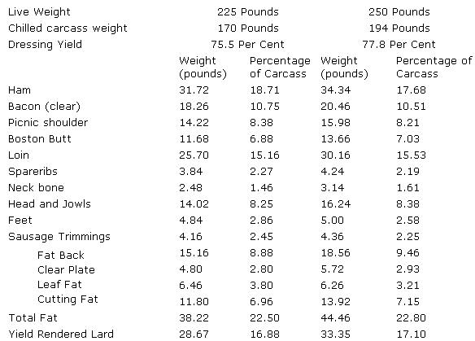 SCORING THE BELLY |
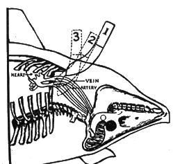 SPLITTING THE BREAST BONE |
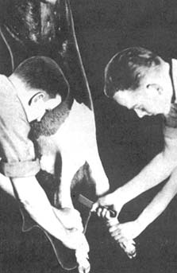 RIPPING THE BELLY |
|
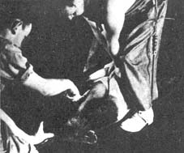 |
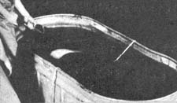 |
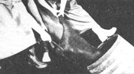 |
|
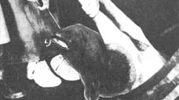 |
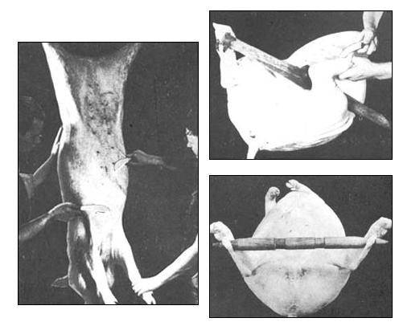 |
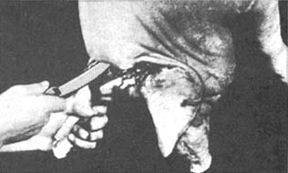 |
|
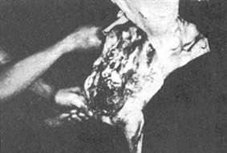 |
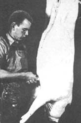 |
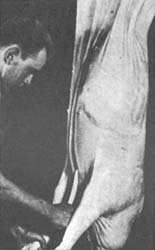 |
|
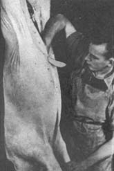 |
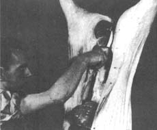 |
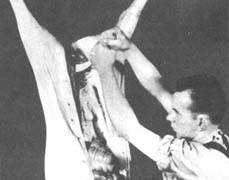 |
|
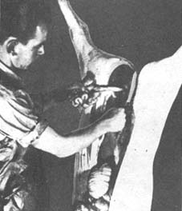 |
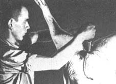 |
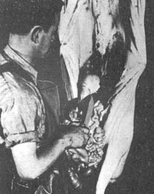 |
|
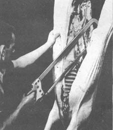 |
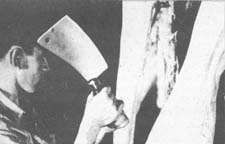 |
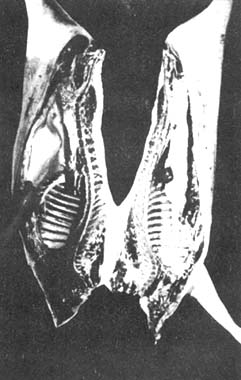 |
|
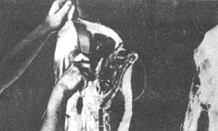 |
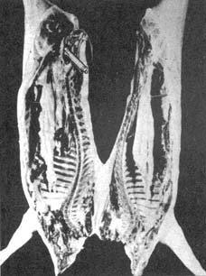 |
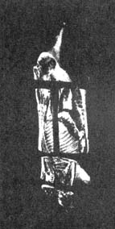 |